34 ikon · Health Icons, wariant filled, siatka 48 px, kolor #C8102E, margines 4 px (kształt w polu 40×40). Po lewej wersja podstawowa, po prawej biały na czerwonym. Przerywana ramka = granica siatki.
rko.svgpeople/cpr.svg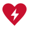
aed.svgdevices/defibrillator.svgoparzenie.svgconditions/burn.svgoparzenie-chemiczne.svgconditions/chemical-burn.svgchlodzenie-woda.svgobjects/running-water.svg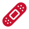
plaster.svgobjects/bandage-adhesive.svg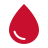
krwawienie.svgbody/blood-drop.svg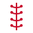
rana.svgdevices/stitches.svguraz-glowy.svgemotions/face-bandaged.svg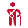
uraz.svgpeople/traumatism.svgzlamanie.svgdevices/cast.svgtemblak.svgdevices/sling.svg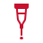
kula.svgdevices/crutches.svgkosc.svgbody/bone.svgrekawiczki.svgppe/ppe-gloves.svgtelefon-alarmowy.svgobjects/phone.svgdyspozytor.svgpeople/call-centre.svgkaretka.svgvehicles/ambulance.svgratunkowy.svgspecialties/accident-and_emergency.svgpunkt-pomocy.svgplaces/emergency-post.svgszpital.svgplaces/hospital.svgszpital-h.svgsymbols/hospital-symbol.svgserce.svgsymbols/heart.svgtetno.svgsymbols/heartbeat.svgoddech.svgbody/lungs.svgzaslabniecie.svgemotions/face-dizzy.svgalergia.svgconditions/allergies.svg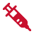
zastrzyk.svgdevices/syringe.svg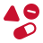
leki.svgmedications/medicines.svg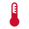
termometr.svgdevices/thermometer.svg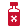
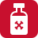
zatrucie.svgsymbols/poison.svg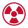
skazenie.svgsymbols/hazardous.svguwaga.svgsymbols/alert-triangle.svgpunkt-zbiorki.svgsymbols/assembly-point.svg